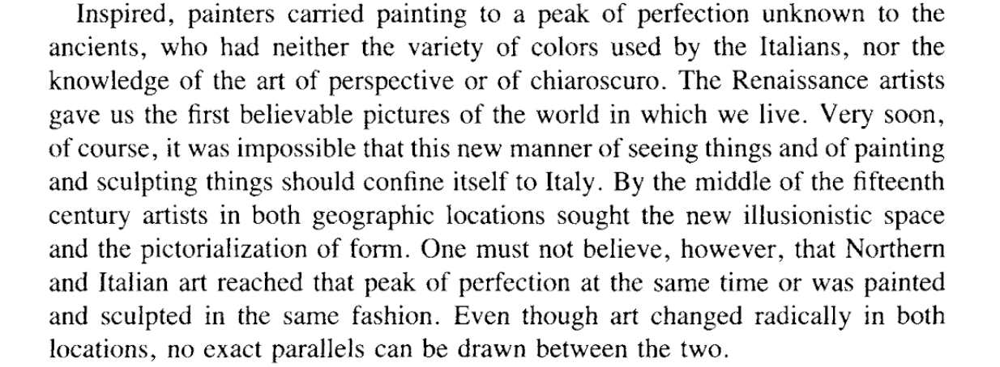
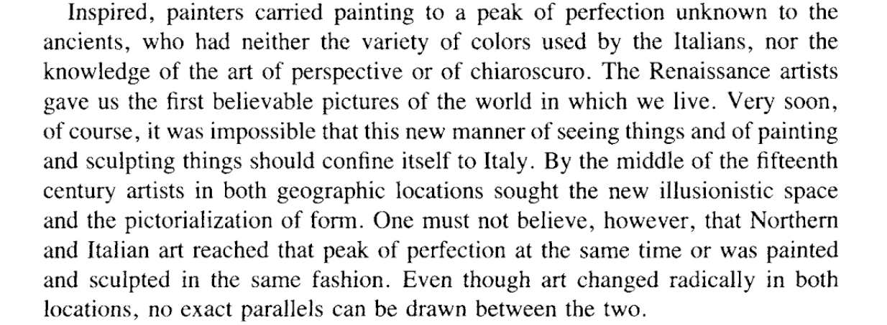

The following statements are directed at academic production and should be considered in that context. This does not include painters, potters, printmakers, book artists or metal workers. Yet. I'm going to start right out by saying it: If it doesn't exist on the internet, it doesn't exist. I used to say this hyperbolically but as time has gone on, it's proved to be a truism, perhaps the paradigmatic truism of our times.